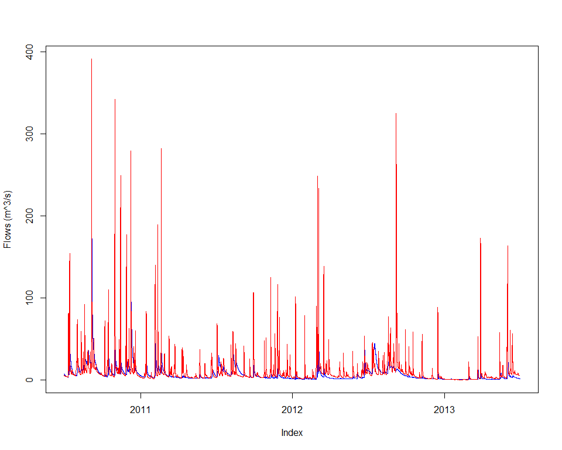
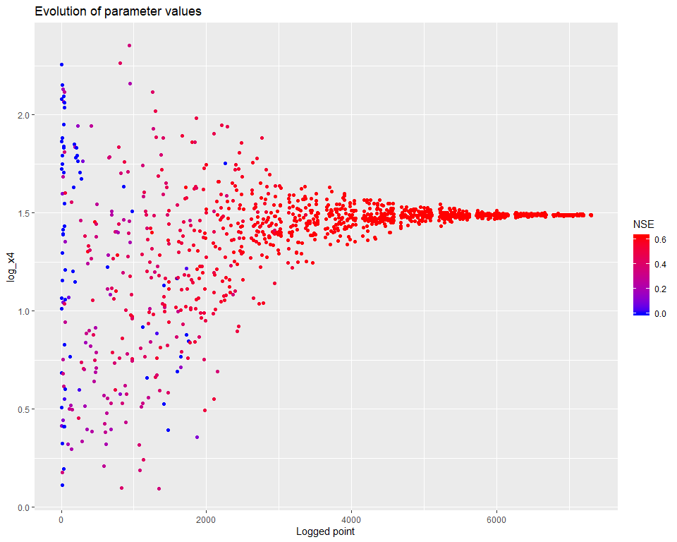
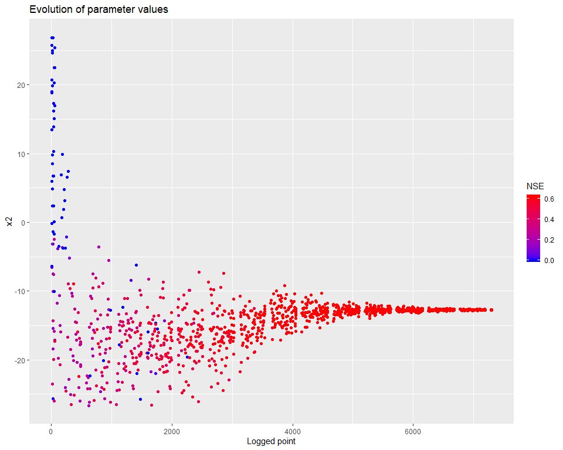
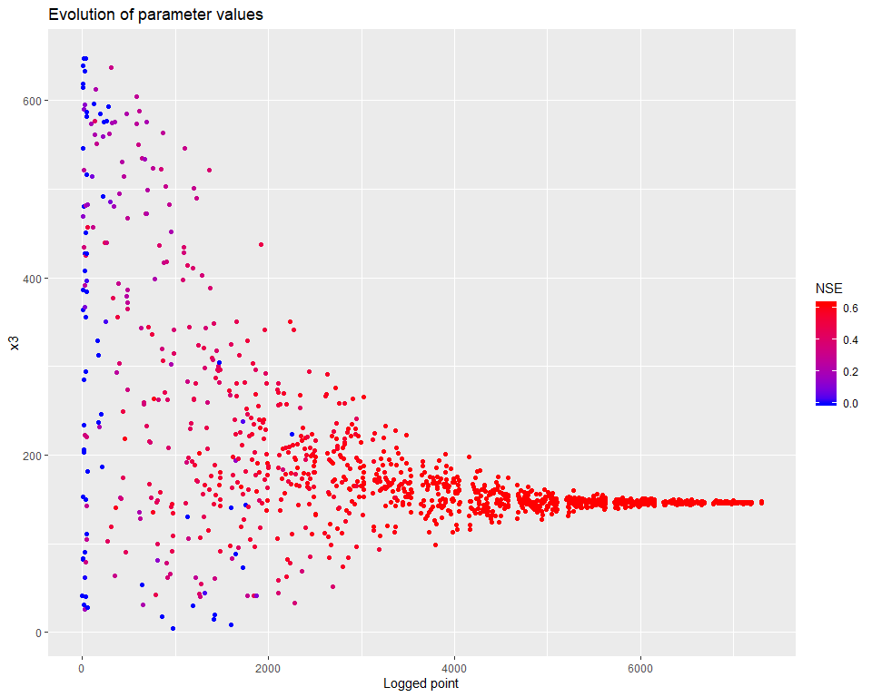
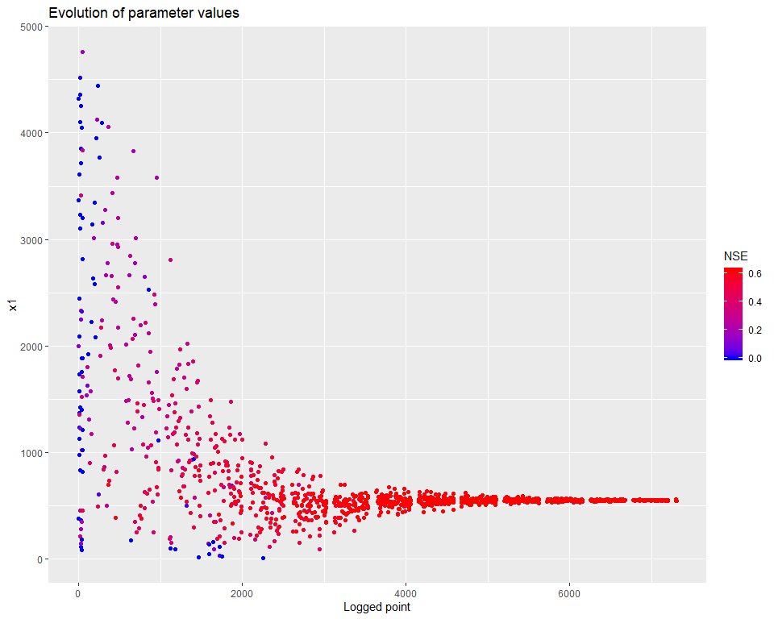
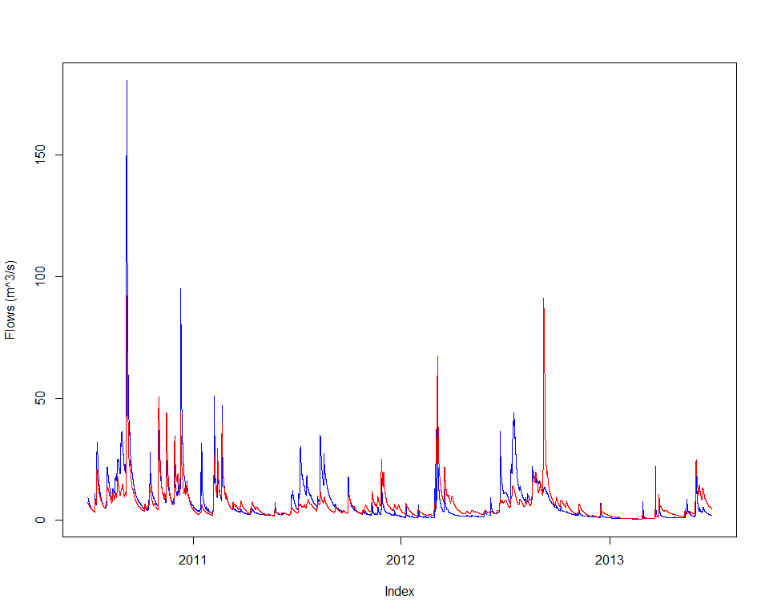

Calibrating tied meta parameters
Jean-Michel Perraud 2020-01-28
Sample code to define meta parameter sets over a catchment
About this document
This document was generated from an R markdown file on 2020-01-28 10:54:59. It illustrates how to set up a calibration where a global parameterization is set at the catchment level, with scaled values for each subareas. This method helps to keep the degrees of freedom of an optimisation to a minimum.
Getting started
library(swift)We need to adjust the observed flow, as the SWIFTv1 legacy missing value code is not consistent with default handling in SAK. Note that I think the flow included in the sample data is the Ovens catchment outlet, but I am not sure!
flow <- sampleSeries('Abbeyard', 'flow')
flow[which(flow < -1)] <- NAWe create a system with areas similar to the real use case, but do note that test catchment structure is just an arbitrary default one, suitable for this example, but probably not a valid model.
areasKm2 <- c(91.2627, 95.8716, 6.5610, 128.4822, 93.0042)
mss <- createTestCatchmentStructure(areasKm2 = areasKm2)
ms <- mss$model
ms <- swapModel(ms, 'Muskingum', 'channel_routing')We will run over a few years and calibrate with a warmup of two years.
e <- end(flow) - lubridate::ddays(2)
w <- e - lubridate::dyears(10)
s <- w - lubridate::dyears(2)
ms <- configureTestSimulation(ms, dataId = "Ovens", simulStart = s,
simulEnd = e, tstep = "hourly",
varNameRain = "P", varNamePet = "E",
varNameDataRain = 'rain', varNameDataPet = 'evap') The package includes a function that flags possible inconsistencies prior to running a model (inconsistent time steps, etc.)
checkSimulation(ms)## $errors
## character(0)We need to adjust a couple of parameters for proper operation on hourly data for the GR4 model structure.
pGr4jHourly <- createGr4jhParameters()
parameterizerAsDataFrame(pGr4jHourly)## Name Min Max Value
## 1 PercFactor 4.00 4.00 4.00
## 2 UHExponent 1.25 1.25 1.25applySysConfig(pGr4jHourly, ms)We now define a meta parameter set with area scaling applied to x4 and time scaling applied to x2 and x3.
refArea <- 250
timeSpan <- as.integer(lubridate::dhours(1))
p <- gr4jScaledParameterizer(refArea, timeSpan)
(pSpecGr4j <- joki::getFreeParams('GR4J'))## Name Value Min Max
## 1 x1 650.488000 1 3000
## 2 x2 -0.280648 -27 27
## 3 x3 7.891230 1 660
## 4 x4 18.917200 1 240pSpecGr4j$Min <- c(1.0E+00, -2.70E+01, 1.0E+00, 1.0E+00)
pSpecGr4j$Max <- c(5.0E+03, 2.70E+01, 6.6E+02, 2.4E+02)
setHyperCube(p, pSpecGr4j)
p <- wrapTransform(p)
addTransform(p, 'log_x4', 'x4', 'log10')We can inspect the values of one of the subareas to check that the parameter values applied are indeed scaled. For instance x4 is scaled based on the area
parameterizerAsDataFrame(p)## Name Min Max Value
## 1 log_x4 0 2.380211 1.276857
## 2 x2 -27 27.000000 -0.280648
## 3 x3 1 660.000000 7.891230
## 4 x1 1 5000.000000 650.488000subareaIds <- paste('subarea', getSubareaIds(ms), sep='.')
areas <- getStateValue(ms, paste(subareaIds, 'areaKm2', sep='.') )
x4ParamIds <- paste(subareaIds, 'x4', sep='.')
getStateValue(ms, x4ParamIds)## subarea.lnk1.x4 subarea.lnk2.x4 subarea.lnk3.x4 subarea.lnk4.x4
## 0.5 0.5 0.5 0.5
## subarea.lnk5.x4
## 0.5applySysConfig(p, ms)
getStateValue(ms, x4ParamIds)## subarea.lnk1.x4 subarea.lnk2.x4 subarea.lnk3.x4 subarea.lnk4.x4
## 11.429665 11.714718 3.064586 13.561519
## subarea.lnk5.x4
## 11.538202Build the definition of the optimisation task. TODO: improve ways to search for element keys by element names.
outflowVarname <- "Catchment.StreamflowRate"
recordState(ms, outflowVarname)execSimulation(ms)
library(lubridate)
calc <- getRecorded(ms, outflowVarname)
joki::plotTwoSeries(flow, calc, startTime=end(flow)-lubridate::years(3), endTime=end(flow))
objective <- createObjective(ms, outflowVarname, flow, 'NSE', w, e)
score <- getScore(objective, p)
print(score)## $scores
## NSE
## -3.536795
##
## $sysconfig
## Name Min Max Value
## 1 log_x4 0 2.380211 1.276857
## 2 x2 -27 27.000000 -0.280648
## 3 x3 1 660.000000 7.891230
## 4 x1 1 5000.000000 650.488000We have our objectives defined, and the parameter space ‘p’ in which to search. Let’s create an optimizer and we are ready to go. While the optimizer can be created in one line, we show how to choose one custom termination criterion and how to configure the optimizer to capture a detailed log of the process.
if(Sys.getenv('SWIFT_FULL') != "") {
maxHours = 0.2
} else {
maxHours = 0.02
}
# term <- getMarginalTermination(tolerance = 1e-05, cutoffNoImprovement = 30, maxHours = maxHours)
term <- getMaxRuntimeTermination(maxHours = maxHours)
sceParams <- getDefaultSceParameters()
urs <- createParameterSampler(0, p, 'urs')
optimizer <- createSceOptimSwift(objective, term, SCEpars=sceParams, urs)
calibLogger <- setCalibrationLogger(optimizer, '')At this point you may want to specify the maximum number of cores that can be used by the optimizer, for instance if you wish to keep one core free to work in parallel on something else.
# TODO add an API entry point for SetMaxDegreeOfParallelismHardwareMinusstartTime <- lubridate::now()
calibResults <- executeOptimization(optimizer)
endTime <- lubridate::now()
calibWallTime <- endTime-startTime
print(paste( 'Optimization completed in ', calibWallTime, attr(calibWallTime, 'units')))## [1] "Optimization completed in 1.20513858397802 mins"Processing the calibration log:
d <- getLoggerContent(optimizer)
d$PointNumber = 1:nrow(d)
logMh <- mhplot::mkOptimLog(d, fitness = "NSE", messages = "Message", categories = "Category")
geomOps <- mhplot::subsetByMessage(logMh)
str(geomOps@data)## 'data.frame': 1198 obs. of 9 variables:
## $ Category : Factor w/ 7 levels "Complex No 0",..: 7 7 7 7 7 7 7 7 7 7 ...
## $ CurrentShuffle: Factor w/ 16 levels "","0","1","10",..: 1 1 1 1 1 1 1 1 1 1 ...
## $ Message : Factor w/ 5 levels "Adding a random point in hypercube",..: 3 3 3 3 3 3 3 3 3 3 ...
## $ NSE : num -1.20e+04 1.31e-01 -1.29e-04 -1.02 -3.22e+03 ...
## $ log_x4 : num 2.256 0.414 0.509 1.724 2.08 ...
## $ x1 : num 3366 1996 377 4325 1731 ...
## $ x2 : num 20.7 -6.55 -6.36 5.99 25.78 ...
## $ x3 : num 41.4 469 82.6 614.2 83.7 ...
## $ PointNumber : int 1 2 3 4 5 6 7 8 9 10 ...We can then visualize how the calibration evolved. There are several types of visualisations included in the mhplot package, and numerous customizations possible, but starting with the overall population evolution:
pVarIds <- (parameterizerAsDataFrame(p))$Name
for (pVarId in pVarIds) {
print(mhplot::plotParamEvolution(geomOps, pVarId, objLims=c(0,1)))
}
sortedResults <- sortByScore(calibResults, 'NSE')
bestPset <- getScoreAtIndex(sortedResults, 1)
bestPset <- GetSystemConfigurationWila_R(bestPset)swift can back-transform a parameters to obtain the untransformed parameter set(s):
untfPset <- backtransform(bestPset)
(score <- getScore(objective, bestPset))## $scores
## NSE
## 0.6221243
##
## $sysconfig
## Name Min Max Value
## 1 log_x4 0 2.380211 1.488763
## 2 x2 -27 27.000000 -12.748777
## 3 x3 1 660.000000 147.210803
## 4 x1 1 5000.000000 548.429824(score <- getScore(objective, untfPset))## $scores
## NSE
## 0.6221243
##
## $sysconfig
## Name Min Max Value
## 1 x2 -27 27 -12.74878
## 2 x3 1 660 147.21080
## 3 x4 1 240 30.81507
## 4 x1 1 5000 548.42982Finally, let’s have a visual of the fitted streamflow data at Abbeyard:
applySysConfig(bestPset, ms)
execSimulation(ms)
modRunoff <- getRecorded(ms, outflowVarname)
joki::plotTwoSeries(flow, modRunoff, startTime=end(modRunoff)-lubridate::years(3), endTime=end(modRunoff))